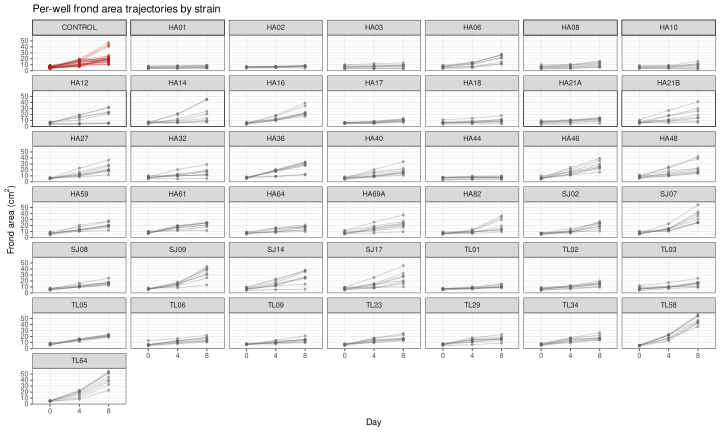
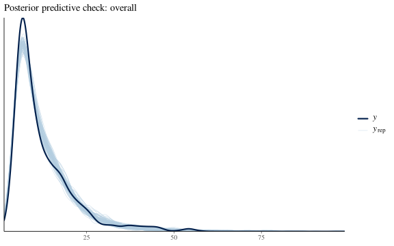
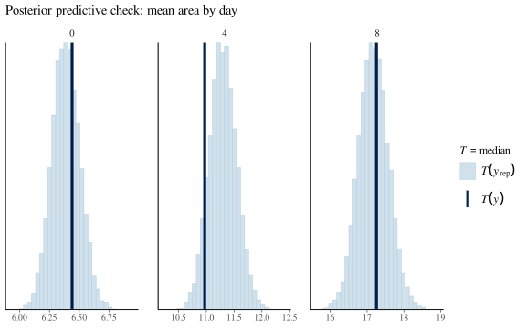
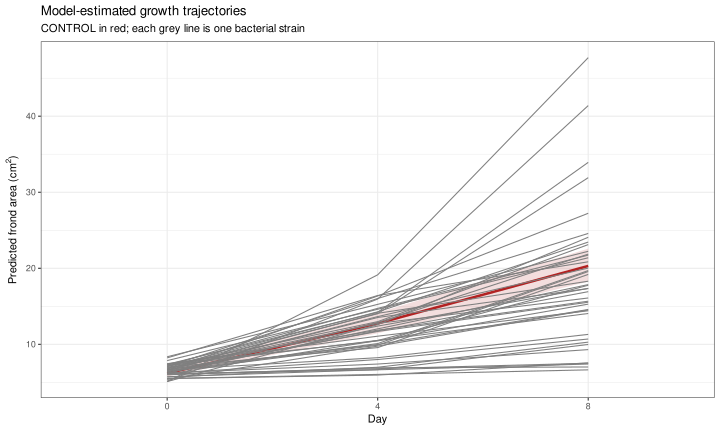
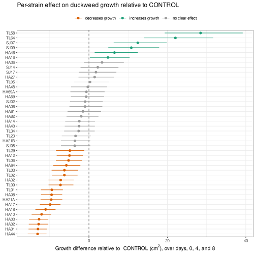
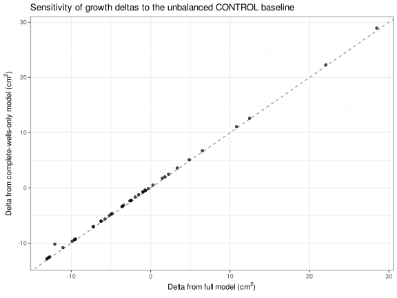

Bayesian model of duckweed growth with and without bacteria
CONTROL, no bacteria), then uses marginaleffects to estimate, for each strain, the difference-in-differences in growth relative to CONTROL - i.e. whether that strain significantly increases or decreases duckweed growth.
1 Design and modeling strategy
Frond area was measured longitudinally (day 0, 4, 8) for individual wells, 8 wells (biological replicates) per strain per plate, see 01_read_frondarea.qmd for how the raw plate-reader exports were combined and cleaned. Two design features shape the model:
- Repeated measures: the same physical well is imaged at all three timepoints, so observations within a well are correlated. We account for this with a well-level random intercept,
(1 | well_uid). - Strain and plate are almost completely confounded: with one exception (
CONTROL, which spans several plates), every strain occupies exactly one physical plate. This means any plate-specific batch effect (e.g. a plate that got slightly more light) is inseparable from that strain’s estimated effect - there is no cross-plate replication to disentangle them. Therefore, we do not add a separate plate-level random effect (it would be almost entirely collinear with the strain fixed effect); this is worth keeping in mind when interpreting any single strain’s effect.
Frond area is strictly positive and right-skewed (growth is a roughly multiplicative process), so we model it with a lognormal() family rather than treating raw area as Gaussian. day is treated as a 3-level factor (0/4/8) rather than a continuous slope, since we only have 3 timepoints and no reason to assume a linear (or any particular parametric) growth curve over that range.
The fixed-effect structure is day * strain, with CONTROL set as the reference level for strain and day 0 as the reference level for day. Under this parameterization, the day:strain interaction coefficients directly represent, for each strain, how its growth trajectory deviates from CONTROL’s - i.e. exactly the “delta” quantity of interest. We use marginaleffects to compute these contrasts on the natural (response, cm²) scale with correctly propagated posterior uncertainty, rather than reading raw log-scale coefficients.
1.1 Libraries
1.2 Global variables
2 Load data
Show/hide code
Rows: 1,125
Columns: 20
$ day <fct> 0, 0, 0, 0, 0, 0, 0, 0, 0, 0, 0, 0, 0, 0, 0, 0, 0, 0,…
$ plate_uid <chr> "HA_36_HA40_HA44", "HA_36_HA40_HA44", "HA_36_HA40_HA4…
$ well_uid <chr> "HA_36_HA40_HA44_A1", "HA_36_HA40_HA44_A2", "HA_36_HA…
$ well_id <chr> "A1", "A2", "A3", "A4", "A5", "A6", "B1", "B2", "B3",…
$ plate_id <chr> "A1", "A1", "A1", "A1", "A1", "A1", "A1", "A1", "A1",…
$ plate_name <chr> "HA_36_HA40_HA44", "HA_36_HA40_HA44", "HA_36_HA40_HA4…
$ strain <fct> HA36, HA36, HA40, HA40, HA44, HA44, HA36, HA36, HA40,…
$ sample <chr> "HA36", "HA36", "HA40", "HA40", "HA44", "HA44", "HA36…
$ replicate <dbl> 1, 5, 1, 5, 1, 5, 2, 6, 2, 6, 2, 6, 3, 7, 3, 7, 3, 7,…
$ is_control <lgl> FALSE, FALSE, FALSE, FALSE, FALSE, FALSE, FALSE, FALS…
$ area <dbl> 7.63, 6.80, 7.08, 6.24, 7.23, 3.80, 6.38, 7.62, 8.45,…
$ count <dbl> 2, 1, 1, 2, 1, 2, 2, 2, 2, 1, 1, 2, 1, 2, 1, 2, 1, 1,…
$ color_blue <dbl> 44.0, 39.0, 52.0, 25.0, 50.0, 35.5, 31.5, 35.5, 52.0,…
$ color_green <dbl> 135.0, 139.0, 141.0, 133.0, 140.0, 138.0, 136.5, 138.…
$ color_hue <dbl> 53.68, 51.99, 51.01, 51.78, 51.65, 50.78, 51.62, 52.1…
$ color_red <dbl> 121.5, 126.0, 131.0, 116.0, 129.0, 125.0, 120.0, 122.…
$ color_saturation <dbl> 170.51, 181.65, 158.65, 204.94, 160.84, 187.10, 195.2…
$ color_value <dbl> 134.85, 138.79, 141.16, 132.88, 139.73, 138.45, 136.6…
$ date <chr> "2026-06-03T12:17:28.796Z", "2026-06-03T12:16:38.213Z…
$ source_file <chr> "DW_plates_1-10_0d.xlsx", "DW_plates_1-10_0d.xlsx", "…3 Exploratory look
Show/hide code
frondarea |>
ggplot(aes(x = day, y = area, group = well_uid, color = is_control)) +
geom_line(alpha = 0.3) +
geom_point(size = 0.8, alpha = 0.5) +
facet_wrap(~strain) +
scale_color_manual(
values = c(`TRUE` = "firebrick", `FALSE` = "grey40"),
guide = "none"
) +
labs(
x = "Day",
y = expression("Frond area (" * cm^2 * ")"),
title = "Per-well frond area trajectories by strain"
) +
theme_bw(base_size = 9)
4 Fit model
Priors are weakly informative on the log scale: normal(0, 1) on all fixed-effect coefficients (day, strain, and their interaction) allows roughly up to e-fold differences within one prior SD, which keeps estimates regularized given 42 strains are each informed by only 8 wells; exponential(1) on the well-level random-effect SD. Default brms priors are used for the intercept and residual SD (sigma), which are already sensible weakly-informative choices for this scale.
The fitted model is cached to disk via brm(..., file = ...). On subsequent renders, brms will simply reload the cached fit instead of resampling, and only refit if the formula, data, priors, or family change (file_refit = "on_change").
Show/hide code
priors <- c(
prior(normal(0, 1), class = "b"),
prior(exponential(1), class = "sd")
)
fit_growth <- brm(
area ~ day * strain + (1 | well_uid),
data = frondarea,
family = lognormal(),
prior = priors,
sample_prior = "yes",
chains = 4,
cores = 4,
iter = 4000,
warmup = 1000,
control = list(adapt_delta = 0.95, max_treedepth = 12),
seed = 123,
backend = "cmdstanr",
file = path(models_dir, "fit_growth"),
file_refit = "on_change"
)When brms reloads a cached fit, the training data can’t always be recovered reliably from the environment, which marginaleffects warns about. We attach it explicitly so all downstream contrasts use exactly the data the model was fit to.
5 Diagnostics
Family: lognormal
Links: mu = identity
Formula: area ~ day * strain + (1 | well_uid)
Data: frondarea (Number of observations: 1125)
Draws: 4 chains, each with iter = 4000; warmup = 1000; thin = 1;
total post-warmup draws = 12000
Multilevel Hyperparameters:
~well_uid (Number of levels: 408)
Estimate Est.Error l-95% CI u-95% CI Rhat Bulk_ESS Tail_ESS
sd(Intercept) 0.24 0.01 0.22 0.26 1.00 3613 5656
Regression Coefficients:
Estimate Est.Error l-95% CI u-95% CI Rhat Bulk_ESS Tail_ESS
Intercept 1.80 0.04 1.73 1.87 1.00 2338 4107
day4 0.72 0.05 0.62 0.82 1.00 1215 2540
day8 1.19 0.05 1.09 1.29 1.00 1158 2723
strainHA01 -0.12 0.11 -0.34 0.11 1.00 4137 6024
strainHA02 -0.01 0.11 -0.24 0.21 1.00 3885 5883
strainHA03 -0.02 0.11 -0.24 0.20 1.00 3463 5415
strainHA06 0.03 0.11 -0.19 0.26 1.00 3857 5809
strainHA08 -0.08 0.12 -0.31 0.15 1.00 3596 5997
strainHA10 -0.12 0.12 -0.34 0.12 1.00 4209 6178
strainHA12 -0.14 0.11 -0.36 0.08 1.00 4067 6059
strainHA14 -0.02 0.12 -0.24 0.21 1.00 3872 6126
strainHA16 -0.19 0.12 -0.43 0.03 1.00 3674 5852
strainHA17 -0.07 0.11 -0.29 0.15 1.00 3944 6271
strainHA18 0.01 0.11 -0.22 0.23 1.00 4085 5725
strainHA21A -0.00 0.12 -0.23 0.22 1.00 4038 6192
strainHA21B 0.10 0.12 -0.12 0.33 1.00 3741 6013
strainHA27 0.00 0.11 -0.22 0.23 1.00 3661 5676
strainHA32 0.19 0.11 -0.03 0.41 1.00 3928 6240
strainHA36 0.14 0.12 -0.09 0.36 1.00 4139 6278
strainHA40 0.01 0.11 -0.21 0.23 1.00 3927 6269
strainHA44 -0.03 0.11 -0.26 0.19 1.00 4240 5996
strainHA46 0.06 0.11 -0.16 0.29 1.00 3747 5725
strainHA48 0.30 0.11 0.08 0.53 1.00 3949 5909
strainHA59 0.06 0.12 -0.17 0.29 1.00 3904 6139
strainHA61 0.28 0.11 0.06 0.50 1.00 3817 5360
strainHA64 0.17 0.12 -0.06 0.39 1.00 4046 6756
strainHA69A 0.24 0.11 0.02 0.46 1.00 3756 6569
strainHA82 0.12 0.11 -0.10 0.34 1.00 3858 6404
strainSJ02 0.05 0.11 -0.18 0.27 1.00 3979 6223
strainSJ07 0.18 0.11 -0.05 0.40 1.00 4002 5963
strainSJ08 0.04 0.12 -0.19 0.26 1.00 3881 5896
strainSJ09 0.11 0.12 -0.11 0.34 1.00 3877 5381
strainSJ14 0.13 0.11 -0.09 0.36 1.00 3670 5483
strainSJ17 0.14 0.11 -0.08 0.37 1.00 3561 6201
strainTL01 0.08 0.11 -0.15 0.30 1.00 4002 6125
strainTL02 0.08 0.12 -0.15 0.31 1.00 3663 5316
strainTL03 0.18 0.11 -0.05 0.40 1.00 3236 5662
strainTL05 0.16 0.11 -0.06 0.39 1.00 3986 6387
strainTL06 0.06 0.11 -0.16 0.28 1.00 3455 5475
strainTL09 0.15 0.12 -0.08 0.37 1.00 3968 6043
strainTL23 0.06 0.11 -0.16 0.28 1.00 3408 5409
strainTL29 0.10 0.12 -0.12 0.33 1.00 3663 5741
strainTL34 0.09 0.11 -0.14 0.32 1.00 4058 6275
strainTL58 -0.20 0.12 -0.42 0.04 1.00 3568 5903
strainTL64 -0.18 0.12 -0.41 0.05 1.00 3629 4555
day4:strainHA01 -0.63 0.11 -0.85 -0.42 1.00 4466 6982
day8:strainHA01 -1.00 0.11 -1.22 -0.79 1.00 4048 7573
day4:strainHA02 -0.64 0.11 -0.85 -0.42 1.00 4537 7252
day8:strainHA02 -0.99 0.11 -1.21 -0.78 1.00 3990 7125
day4:strainHA03 -0.61 0.11 -0.83 -0.39 1.00 4299 7917
day8:strainHA03 -0.98 0.11 -1.20 -0.76 1.00 3923 6096
day4:strainHA06 -0.29 0.11 -0.51 -0.07 1.00 3953 7126
day8:strainHA06 -0.07 0.11 -0.29 0.15 1.00 3898 6919
day4:strainHA08 -0.52 0.11 -0.73 -0.30 1.00 4408 7475
day8:strainHA08 -0.60 0.11 -0.81 -0.38 1.00 4160 6934
day4:strainHA10 -0.65 0.12 -0.88 -0.41 1.00 3786 7617
day8:strainHA10 -0.87 0.11 -1.10 -0.65 1.00 3892 7045
day4:strainHA12 -0.13 0.11 -0.34 0.09 1.00 4701 6871
day8:strainHA12 -0.20 0.11 -0.41 0.02 1.00 4017 6967
day4:strainHA14 -0.17 0.11 -0.39 0.04 1.00 3767 8121
day8:strainHA14 -0.12 0.11 -0.33 0.10 1.00 4013 7068
day4:strainHA16 0.18 0.11 -0.04 0.40 1.00 3893 6072
day8:strainHA16 0.36 0.11 0.15 0.58 1.00 4376 7796
day4:strainHA17 -0.57 0.11 -0.78 -0.36 1.00 3595 6647
day8:strainHA17 -0.64 0.11 -0.85 -0.42 1.00 3809 7397
day4:strainHA18 -0.55 0.11 -0.77 -0.33 1.00 4454 7264
day8:strainHA18 -0.79 0.11 -1.00 -0.57 1.00 4252 7648
day4:strainHA21A -0.46 0.11 -0.68 -0.24 1.00 3590 7326
day8:strainHA21A -0.64 0.11 -0.85 -0.42 1.00 3778 7349
day4:strainHA21B -0.12 0.11 -0.34 0.10 1.00 4017 6688
day8:strainHA21B -0.25 0.11 -0.47 -0.04 1.00 3966 7172
day4:strainHA27 0.00 0.11 -0.21 0.22 1.00 3317 6979
day8:strainHA27 0.07 0.11 -0.15 0.28 1.00 3859 6741
day4:strainHA32 -0.33 0.11 -0.54 -0.11 1.00 4495 7870
day8:strainHA32 -0.53 0.11 -0.75 -0.32 1.00 4044 7104
day4:strainHA36 0.09 0.11 -0.13 0.31 1.00 4032 6755
day8:strainHA36 0.05 0.11 -0.16 0.27 1.00 3475 6231
day4:strainHA40 -0.06 0.11 -0.28 0.15 1.00 3877 7784
day8:strainHA40 -0.14 0.11 -0.35 0.08 1.00 4090 7086
day4:strainHA44 -0.58 0.11 -0.80 -0.36 1.00 4443 7238
day8:strainHA44 -1.03 0.11 -1.25 -0.82 1.00 4077 7147
day4:strainHA46 0.19 0.11 -0.03 0.41 1.00 4329 6607
day8:strainHA46 0.23 0.11 0.01 0.44 1.00 4081 7132
day4:strainHA48 -0.12 0.11 -0.33 0.10 1.00 3823 7151
day8:strainHA48 -0.21 0.11 -0.43 0.01 1.00 3815 7153
day4:strainHA59 0.01 0.11 -0.21 0.22 1.00 3976 7221
day8:strainHA59 -0.07 0.11 -0.29 0.14 1.00 3974 6880
day4:strainHA61 -0.03 0.11 -0.24 0.19 1.00 4072 6721
day8:strainHA61 -0.26 0.11 -0.47 -0.04 1.00 3717 6790
day4:strainHA64 -0.24 0.11 -0.46 -0.01 1.00 4178 8021
day8:strainHA64 -0.42 0.12 -0.66 -0.20 1.00 3830 6581
day4:strainHA69A -0.10 0.11 -0.32 0.12 1.00 4403 6493
day8:strainHA69A -0.19 0.11 -0.41 0.03 1.00 3844 6319
day4:strainHA82 -0.41 0.11 -0.62 -0.19 1.00 3924 7315
day8:strainHA82 -0.18 0.11 -0.39 0.04 1.00 4405 7528
day4:strainSJ02 -0.28 0.11 -0.49 -0.06 1.00 4237 6280
day8:strainSJ02 -0.08 0.11 -0.29 0.14 1.00 3806 6180
day4:strainSJ07 -0.07 0.11 -0.28 0.15 1.00 4053 7070
day8:strainSJ07 0.34 0.11 0.13 0.56 1.00 3887 7358
day4:strainSJ08 -0.12 0.11 -0.34 0.11 1.00 3741 6687
day8:strainSJ08 -0.22 0.11 -0.44 0.00 1.00 3972 7385
day4:strainSJ09 -0.02 0.11 -0.23 0.20 1.00 4778 7255
day8:strainSJ09 0.34 0.11 0.13 0.55 1.00 4630 7445
day4:strainSJ14 -0.02 0.11 -0.24 0.20 1.00 3376 6983
day8:strainSJ14 0.01 0.11 -0.20 0.23 1.00 3660 6812
day4:strainSJ17 -0.13 0.11 -0.34 0.09 1.00 3953 6357
day8:strainSJ17 -0.02 0.11 -0.23 0.21 1.00 4119 7363
day4:strainTL01 -0.51 0.11 -0.73 -0.29 1.00 4247 7353
day8:strainTL01 -0.66 0.11 -0.87 -0.45 1.00 4146 7783
day4:strainTL02 -0.32 0.11 -0.54 -0.11 1.00 3733 7387
day8:strainTL02 -0.41 0.11 -0.63 -0.20 1.00 3935 6397
day4:strainTL03 -0.38 0.11 -0.60 -0.16 1.00 3642 7135
day8:strainTL03 -0.46 0.11 -0.69 -0.24 1.00 4121 6721
day4:strainTL05 -0.02 0.11 -0.23 0.20 1.00 4186 7269
day8:strainTL05 -0.10 0.11 -0.31 0.12 1.00 4413 7421
day4:strainTL06 -0.15 0.11 -0.36 0.07 1.00 4109 5995
day8:strainTL06 -0.33 0.11 -0.55 -0.11 1.00 3863 7714
day4:strainTL09 -0.34 0.11 -0.56 -0.12 1.00 3976 7096
day8:strainTL09 -0.52 0.11 -0.73 -0.30 1.00 3956 7031
day4:strainTL23 -0.00 0.11 -0.21 0.21 1.00 4613 6999
day8:strainTL23 -0.22 0.11 -0.44 -0.01 1.00 3973 6611
day4:strainTL29 -0.10 0.11 -0.32 0.11 1.00 3588 6559
day8:strainTL29 -0.33 0.11 -0.56 -0.12 1.00 3726 7226
day4:strainTL34 0.01 0.11 -0.21 0.23 1.00 4341 6654
day8:strainTL34 -0.19 0.11 -0.41 0.02 1.00 4334 8033
day4:strainTL58 0.60 0.11 0.39 0.82 1.00 3866 7345
day8:strainTL58 1.05 0.11 0.83 1.27 1.00 3967 6808
day4:strainTL64 0.40 0.11 0.19 0.62 1.00 4483 7155
day8:strainTL64 0.89 0.11 0.67 1.11 1.00 4540 8008
Further Distributional Parameters:
Estimate Est.Error l-95% CI u-95% CI Rhat Bulk_ESS Tail_ESS
sigma 0.20 0.01 0.19 0.21 1.00 6047 8123
Draws were sampled using sample(hmc). For each parameter, Bulk_ESS
and Tail_ESS are effective sample size measures, and Rhat is the potential
scale reduction factor on split chains (at convergence, Rhat = 1).Show/hide code
Rhat range: 0.9997847 1.002927 Minimum Bulk_ESS among fixed effects: 1157.924 Show/hide code

Show/hide code

6 Estimated growth trajectories
Population-level (re_formula = NA, i.e. marginalizing over well-level random effects) predicted mean frond area by strain and day.
Show/hide code
Show/hide code
pred_trajectories |>
mutate(is_control = strain == "CONTROL") |>
ggplot(aes(x = day, y = estimate, group = strain)) +
geom_ribbon(
data = \(x) filter(x, is_control),
aes(ymin = conf.low, ymax = conf.high),
fill = "firebrick",
alpha = 0.15
) +
geom_line(aes(color = is_control, linewidth = is_control, group = strain)) +
scale_color_manual(
values = c(`TRUE` = "firebrick", `FALSE` = "grey50"),
guide = "none"
) +
scale_linewidth_manual(
values = c(`TRUE` = 1.2, `FALSE` = 0.5),
guide = "none"
) +
labs(
x = "Day",
y = expression("Predicted frond area (" * cm^2 * ")"),
title = "Model-estimated growth trajectories",
subtitle = "CONTROL in red; each grey line is one bacterial strain"
) +
theme_bw(base_size = 11)
re_formula = NA). CONTROL is highlighted in red with its 95% credible interval shaded; each grey line is one bacterial strain.
7 Marginal effects: growth deltas relative to CONTROL
For each strain, we compute the day0->day8 (and day0->day4) change in frond area, then contrast that change against CONTROL’s change over the same interval - i.e. a difference-in-differences. Because strain was releveled so that CONTROL is the first factor level, hypothesis = ~ reference contrasts every strain’s growth against CONTROL’s growth directly.
With hypothesis = ~reference the CONTROL row is consumed as the reference and the remaining 42 rows are labelled in a hypothesis column of the form (HA01) - (CONTROL), so we parse the strain name back out of that label.
Show/hide code
parse_strain <- function(x) {
str_remove_all(str_extract(x, "^\\([^)]+\\)"), "[()]")
}
delta_vs_control <- function(fit, days) {
avg_comparisons(
fit,
variables = list(day = days),
by = "strain",
hypothesis = ~reference,
re_formula = NA,
type = "response"
)
}
tidy_deltas <- function(obj, days) {
as_tibble(obj) |>
mutate(
strain = parse_strain(hypothesis),
comparison_days = paste(days, collapse = " -> "),
.before = 1
)
}
deltas_0_8_obj <- delta_vs_control(fit_growth, c("0", "8"))
deltas_0_4_obj <- delta_vs_control(fit_growth, c("0", "4"))
deltas <- bind_rows(
tidy_deltas(deltas_0_8_obj, c("0", "8")),
tidy_deltas(deltas_0_4_obj, c("0", "4"))
)Posterior probability of direction and a simple decision rule (95% credible interval excludes zero) for the day0->day8 contrast, which is the primary endpoint. prob_increase/prob_decrease are computed directly from the posterior draws behind deltas_0_8_obj via posterior_draws(), so they are exact posterior quantities rather than a normal approximation.
Show/hide code
prob_direction <- deltas_0_8_obj |>
posterior_draws() |>
summarize(
prob_increase = mean(draw > 0),
prob_decrease = mean(draw < 0),
.by = hypothesis
) |>
mutate(strain = parse_strain(hypothesis))
strain_effects <- tidy_deltas(deltas_0_8_obj, c("0", "8")) |>
select(strain, estimate, conf.low, conf.high) |>
left_join(select(prob_direction, -hypothesis), by = "strain") |>
mutate(
direction = case_when(
conf.low > 0 ~ "increases growth",
conf.high < 0 ~ "decreases growth",
TRUE ~ "no clear effect"
)
) |>
arrange(estimate)
strain_effects |> count(direction)Show/hide code
strain_effects |>
mutate(strain = fct_reorder(strain, estimate)) |>
ggplot(aes(x = estimate, y = strain, color = direction)) +
geom_vline(xintercept = 0, linetype = "dashed", color = "grey40") +
geom_pointrange(
aes(xmin = conf.low, xmax = conf.high),
linewidth = 0.5,
size = 0.3
) +
scale_color_manual(
values = c(
"increases growth" = "#1b9e77",
"decreases growth" = "#d95f02",
"no clear effect" = "grey60"
)
) +
labs(
x = expression(
"Growth difference relative to CONTROL (" *
cm^2 *
"), over days, 0, 4, and 8"
),
y = NULL,
color = NULL,
title = "Per-strain effect on duckweed growth relative to CONTROL"
) +
theme_bw(base_size = 10) +
theme(legend.position = "top")
8 Sensitivity check: unbalanced CONTROL baseline
CONTROL is measured on more wells at day 0 (72) than at day 4/8 (24), because two CONTROL-only plates were imaged only at day 0 and never followed up. Those 48 extra wells inform CONTROL’s day-0 baseline but contribute nothing at day 8, so in principle they could bias the CONTROL growth estimate that every delta is measured against. In the raw data the shift is small (pooled CONTROL day-0 mean 6.11 cm² vs 5.77 cm² among wells followed at all three days), but we check it explicitly by refitting on only those wells measured at all three timepoints. This second fit gets its own cache file.
Show/hide code
complete_wells <- frondarea |>
count(well_uid) |>
filter(n == 3) |>
pull(well_uid)
frondarea_complete <- frondarea |> filter(well_uid %in% complete_wells)
fit_growth_complete <- brm(
area ~ day * strain + (1 | well_uid),
data = frondarea_complete,
family = lognormal(),
prior = priors,
chains = 4,
cores = 4,
iter = 4000,
warmup = 1000,
control = list(adapt_delta = 0.95, max_treedepth = 12),
seed = 123,
backend = "cmdstanr",
file = path(models_dir, "fit_growth_complete_wells"),
file_refit = "on_change"
) |>
set_modeldata(frondarea_complete)Show/hide code
sensitivity <- tidy_deltas(
delta_vs_control(fit_growth_complete, c("0", "8")),
c("0", "8")
) |>
select(strain, estimate_complete = estimate) |>
left_join(
select(strain_effects, strain, estimate_full = estimate),
by = "strain"
)
sensitivity |>
ggplot(aes(x = estimate_full, y = estimate_complete)) +
geom_abline(slope = 1, intercept = 0, linetype = "dashed", color = "grey50") +
geom_point(alpha = 0.7) +
labs(
x = expression("Delta from full model (" * cm^2 * ")"),
y = expression("Delta from complete-wells-only model (" * cm^2 * ")"),
title = "Sensitivity of growth deltas to the unbalanced CONTROL baseline"
) +
theme_bw(base_size = 11)